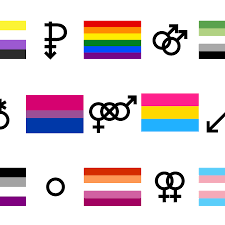

La comunidad Queer en la actualidad
¿Sabes qué significa la "Q" que se ha añadido a las siglas LGTBI?
Esta letra hace referencia al término Queer, que a lo largo de las últimas décadas ha ido evolucionando hasta día de hoy.
| Nombre | Apellido |
|---|---|
| Johana | Lopez |
| Felipe | Anselmo |
| Fidel | Castro |
Todo lo que debes saber
¿Sabes qué significa la "Q" que se ha añadido a las siglas LGTBI?
Esta letra hace referencia al término Queer, que a lo largo de las últimas décadas ha ido evolucionando hasta día de hoy.
La teoría queer es aquella que está pensada en la disidencia sexual, o lo que es lo mismo, en la deconstrucción de las identidades estigmatizadas y tradicionales.
A través del concepto queer se defienden todas las orientaciones sexuales e identidades de género, puesto que se considera que definirse hetero, hombre o mujer, no es más que una construcción social.
Todas las personas no binarias son genderqueer, pero no todas las personas genderqueer son no binarias. ¿Qué significa esto? Pues bien, las personas no binarias son aquellas que rechazan los términos binarios, es decir, el género o la categoría con la que comúnmente se suelen clasificar a las personas: masculino o femenino.
En este sentido, los no binarios descartan establecer etiquetas en el momento en el que sienten reconocidos aspectos de ambos géneros en su identidad, independientemente de cómo nacieron. Los genderqueer son aquellos que sienten inconformidad y rechazo al término binario, no obstante, se definen con otros géneros como el bigénero, el andrógino o el pangénero.